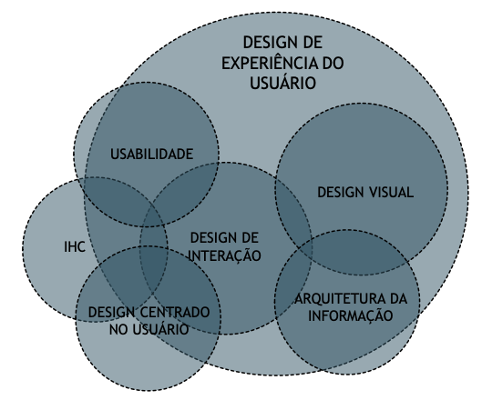

Web Design
- É a área de conhecimento que envolve a criação e planejamento de interfaces interativas para a web como sites e páginas de internet;
- O objetivo é criar uma experiência estética e funcional para os usuários, combinando design gráfico, layout, estrutura de conteúdo e aspectos técnicos;
- Para realizar o web design, o profissional utiliza uma série de ferramentas e linguagens de programação, como HTML e CSS. Além disso, é importante que o web designer tenha conhecimento sobre marketing, branding e UX.
